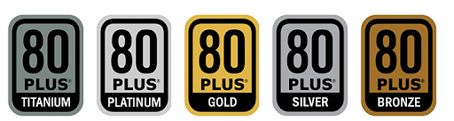

각 부품에 전원을 공급하기 위한 부품이다.
파워는 교류를 직류로 전환해주는 "직류전환장치"이다.
콘센트에서는 교류(AC)가 나오는데 우리가 사용하는 전자제품들은 일반적으로 직류(DC)가 필요하다.
파워는 문제가 생겼을 때 다른 부품에 악영향을 끼치는 경우가 있다.
그러므로, 안정적인 파워와 소비전력대비 적절한 파워가 필요하다.
팁을 주자면 80+인증 제품들을 사는 것이 좋다.(80+인증제품은 안전성면에서 효율적인 것이지 성능면에서 효율적인 것은 아님!!)
